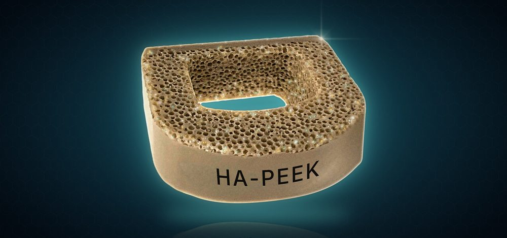
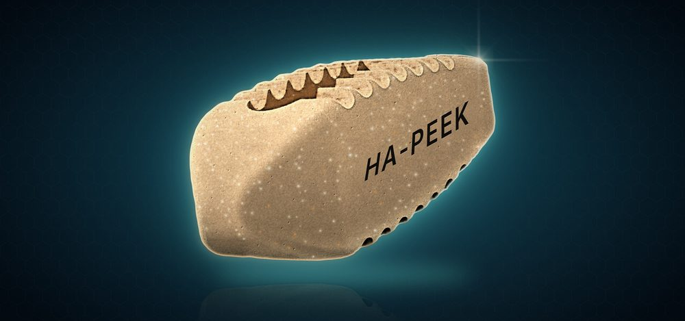

Dr. Gorup and Innovasis
Dr. Gorup uses HA-PEEK implants from Innovasis. This tab gathers what Innovasis says about the material, the registry that tracked patients, and Dr. Gorup’s own study results.
What is HA-PEEK?
Here is the material in short, in Innovasis’s words.


PEEK plus bone mineral
PEEK is a durable polymer used in many spine implants. HA-PEEK adds hydroxyapatite (HA), a mineral found in bone, to the material.
Closer to bone
Innovasis says HA-PEEK is closer to the stiffness of bone than titanium is.
A surface bone can grow onto
Innovasis says the bone mineral covers every surface of the implant, which it says leads to earlier bone growth onto the implant.
Clear on imaging
The material does not block X-rays, CT or MRI, so your doctor can follow healing on those images.
Innovasis says its bone growth findings come from sheep studies, which have not been matched in people. Bone graft and your body’s healing are essential to fusion.
The registry behind the study
Dr. Gorup’s seven-year study used the BioBase registry, which Innovasis runs. It follows patients treated with HA-PEEK implants and asks them about pain and daily activities at each visit.
Patients rated pain and daily activities at each visit.
What Innovasis has published
A paper in the International Journal of Spine Surgery looked at 789 patients from the registry who had anterior cervical discectomy and fusion (ACDF), a neck procedure.
Fusion
Innovasis reports fusion in 91.3% of patients at 6 months and 92.2% at 12 months.
More surgery
Innovasis reports a revision rate of 0.2%.
These numbers are reported by the implant maker for neck fusion. A registry report is not a controlled trial. Dr. Gorup’s own results are on the study results page.
Read more from Innovasis
Innovasis’s own pages. They are written for surgeons, so some terms are technical.
What to keep in mind
This is information from the implant maker. It is not advice for your own case. Ask Dr. Gorup whether HA-PEEK is right for you.
Next steps
Questions about HA-PEEK?
Call Dr. Gorup’s team.
765-446-5210 1345 Unity Place, Suite 310Lafayette, IN 47905